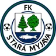

Konečný výsledok
Výsledok 4:2

FK Stará Myjava (hostia)· Oddychové centrum (OC – Tr.Stankovce) · výhra
Návrh webu · nie je to oficiálna stránka klubu
B-mužstvo · VII. liga ObFZ Trenčín, 9. kolo
Konečný výsledok
Výsledok 4:2

FK Stará Myjava (hostia)· Oddychové centrum (OC – Tr.Stankovce) · výhra
Náhradníci
Tréner: Michal Hrbas
Náhradníci
Tréner: Igor Pszota